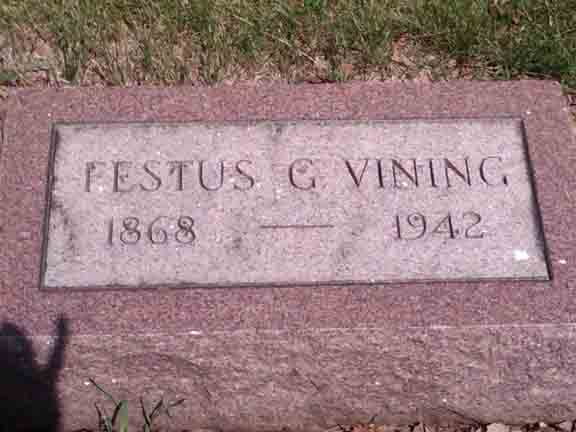
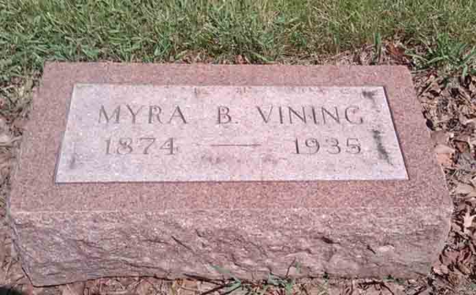

Census Data
| 1900 | 1910 | 1920 | 1930 | 1940 | |
| Floyd R. Vining | 31 | 41 | 51 | 61 | 71 |
| Almira B. (Dennison) Vining | 26 | 35 | 45 | 55 | dead |
| Winnie F. Vining | [living in separate household?] [see note below] |
? | ? | ? |


Death Data
Gravestones for Festus G. Vining and Almira B. (Dennison) Vining, in Mound Grove Cemetery, Kankakee, Kankakee County, Illinois (from Find A Grave):
